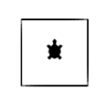
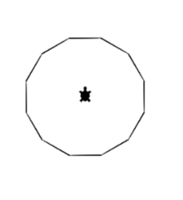

Python Basisaufgaben
Aufgabenbeschreibung
In dieser Aufgabe kannst du mit Python und dem GTurtle einfache Bilder zu zeichnen. Du lernst so die wichtigsten Mechanismen beim Programmieren kennen.
Vorgehen
- Kopiere die Python Vorlage mit der Ausgangslage auf dein Computer über den folgenden Link. Vorlage.py
- Öffne den Link https://webtigerpython.ethz.ch/
- Kopiere den Inhalt der Python Vorlage und füge diesen im linken Bereich ein.
- Versuche nun in der Reihenfolge die Bilder gemäss den Aufgaben unten zu Programmieren
Aufgaben
- Ein Quadrat 
- Ein 12-Eck Hinweis: Verwende eine Schleife 
- Eine gleichmässige Spirale

- Eine wachsende Spirale Hinweis: verwende den Zähler i der Schlaufe.

- Reihe von Rechtecken (Hinweis: Am einfachsten geht es mit einer eigenen Rechteck-Funktion)

- Farbige Reihe (Hinweis: die Farbe lässt sich mit setPenColor(Rotanteil, Grünanteil, Blauanteil) verändern)

- Farbiges Feld (Hinweis: Zwei Schlaufen ineinander)

- Farbige Linien (Hinweis: verwende setPos() und moveTo() für die Linien)

Hinweise zu GTurtle/Python
- Kommentar :
#*Hier kommt der Kommentar hin*
- Variable :
*xyz* oder *xyz* = *3*
- Schleife :
for i in range(*Wiederholungen*): *Code ist eingerückt*
- Logikabfrage :
if *x == y*: *Code ist eingerückt*
- Funktionen :
def *Funktionsname*(*Wert1*, *Wert2*): *Code ist eingerückt*
- Funktion aufrufen :
*Funktionsname*(*Wert1*, *Wert2*)
- (Angaben in ** sind Platzhalter für eigene Namen und Werte